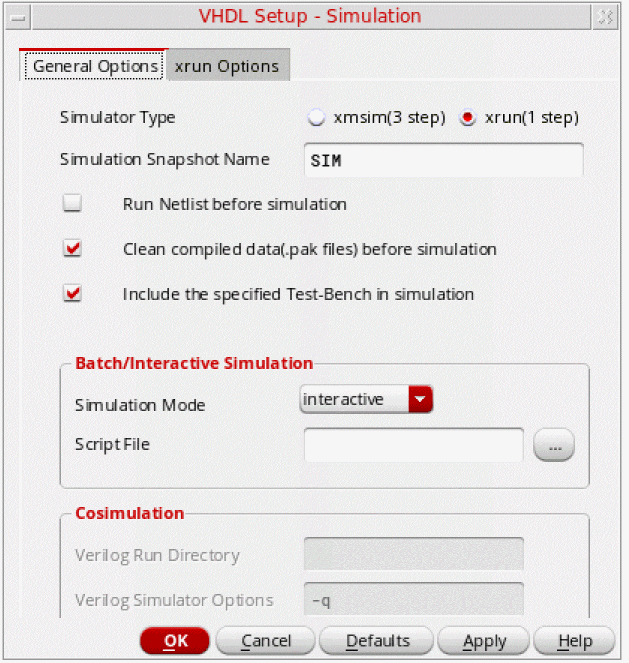
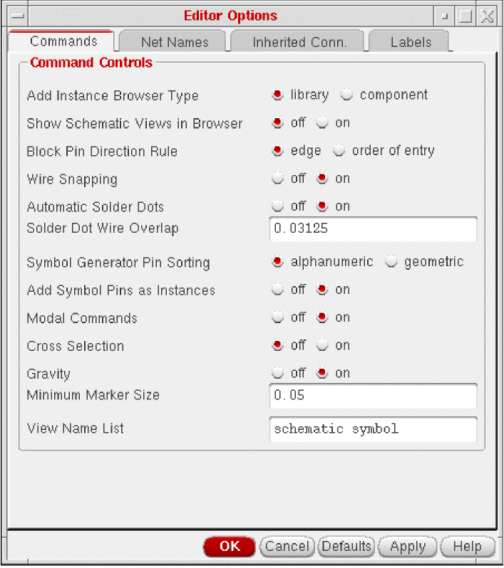
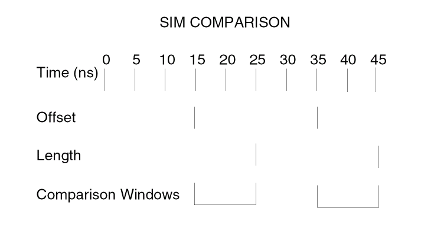

5
Simulating a Netlisted VHDL Design
After netlisting, you can simulate and debug your VHDL design. In the Virtuoso design environment, you can simulate a design by using the xrun utility or the XMVHDL (xmsim) simulator. While the xrun utility is a quick one-step process, the XMVHDL simulator is a three-step process, which involves compiling, elaborating, and simulating the design.
You can set up and run the xrun utility from both, the command line interface and VHDL Toolbox, however, the XMVHDL simulator can be run only from the VHDL Toolbox.
The XMVHDL simulator enables you to:
- Collect simulation data in a database file
- Create your own programs to directly process simulation results
- Display simulation results using a waveform window
- Save the state of a simulation as a “golden” run so that it can be compared with a subsequent run.
This chapter describes the steps to simulate and debug your netlisted design using the VHDL Toolbox.
In this chapter, you will learn about the following topics:
- Simulating a Design Using the VHDL Toolbox
- Debugging Your VHDL Design
- Comparing Simulations
- Simulating a VHDL Design Using Non-Cadence VHDL Tools
For more information about using the command-line options for simulating your design, refer to Netlist and Simulate a VHDL Design. For information on the SKILL functions associated with VHDL Toolbox, see Digital Design Netlisting and Simulation SKILL Reference.
Simulating a Design Using the VHDL Toolbox
Before you can simulate a design by choosing Commands – Simulate, you need to set up the simulation options.
VHDL Setup - Simulation Form
To set simulation options for a VHDL design:
-
In the VHDL Toolbox window, choose Setup – Simulation.
The VHDL Setup - Simulation form appears, as shown in the figure below.

The VHDL Setup - Simulation form consists of two tabs:
General Options Tab
The figure displayed above shows the General Options tab of the VHDL Setup - Simulation form. This tab contains various options to control simulation.
- Simulator Type:
- Simulation Snapshot Name:
- Run Netlist Before Simulation : Ensures the creation of VHDL netlist before running the simulation. The netlister traverses the design hierarchy and converts all the schematics into VHDL design units. The traversal is defined by a switch list, a stop view list, and a stop library list specified in Traversal Settings. After netlisting, the hierarchy is converted into a VHDL configuration. You can choose this option when you are not netlisting the design explicitly before simulation.
- Clean compiled data(.pak files) before simulation: Deletes the elaboration or simulation results of the previous run before starting the simulation. If you do not select this option, the simulator reuses the results of the previous run.
- Include the specified Test Bench in simulaton: Indicates that the user supplied testbench file is also to be added to the list of design files after the specified design gets netlisted. The library, entity name, and architecture can also be specified if their values differ from default values. Once the complete design along with a testbench is compiled and elaborated, the simulator can honor the stimulus in testbench file and perform actions for the users. By default, this option is enabled.
- Batch/Interactive Simulation:
- Cosimulation:
Xrun Options Tab
The following figure shows the Xrun Options tab on the VHDL Setup - Simulation form:
The Xrun Options tab provides options for the xrun utility integrated with Virtuoso. The xrun utility provides a simple invocation process that lets you run the simulator by specifying all input files and command-line options on a single command line.
xmsim simulator. Therefore, the Xrun Options tab is disabled. To enable the Xrun Options tab, set the vhdlSimSimulator SKILL variable to xrun. When you enable the Xrun Options tab, the Cosimulation section of the General Options tab is disabled.When using the xrun utility, you need to set xrun specific options in addition to the options given in the settings done in the General Options tab. The various options on the Xrun Options tab are:
-
Xrun Options: Contains the following fields to specify the settings to be used by the xrun utility:
-
Log File: Specifies path for the xrun log file.
Default:xrun.log -
Xrun Simulator Options: Specifies simulation options that are to be passed to the simulator and are not present in the Simulation Options form.
Default:-q -v93. Here,-qspecifies that all informational messages will be suppressed.-v93specifies that all VHDL-93 features supported in this release will be enabled. -
Include Extensions: Specifies a list of file extensions to be recognized by the xrun utility. xrun recognizes language of a file by the file extension. Therefore, you need to specify the file types to be recognized for a specific language. Select a language from the pull-down list and specify the file extensions to be recognized for that language. This list overrides the default extensions for VHDL files.
By default, the xrun utility recognizes files with the following extensions as VHDL files:.vhd,.vhdp,.vhdl,.vhdlp,.VHD,.VHDP,.VHDL,.VHDLP
By default, the xrun utility recognizes files with the following extensions as Verilog files:.v,.vp,.vs,.V,.VP,.VS
-
Log File: Specifies path for the xrun log file.
-
Debug Options: Specifies the debug options. You can specify the type of access required while compiling the design. No special access is required for viewing the hierarchy or for finding the names of objects (nets, regs, variables, or scopes) in the design. However, you need the following types of access for more control on objects:
- Read access is required to probe nets, regs, and variables (including setting PLI callbacks) and to get the value of these objects.
- Write access is required to interactively set the value of simulation objects (depositing or forcing variables). Write access automatically provides read access.
- Connectivity access is required to get driver and load information about a specific net, reg, or other variable. Connectivity access automatically provides write and read access.
- Enable Line Debugging is required to set breakpoints at source lines or to apply statement callbacks. by default, this option is not checked. Using this option automatically provides read, write, and connectivity access.
.vhdlrc file in the run directory. Inputs from this file are passed to the xrun utility. When you use the same run directory again, the options set in the .vhdlrc file are restored. For more details on the SKILL variables, refer to the Setting VHDL HNL Variables section in Appendix B.Simulating the VHDL Design
Simulation first checks the design. If the check is successful, the VHDL simulator starts in batch or interactive mode on the local machine, as specified in the setup. The VHDL simulator triggers a three-step process to compile, elaborate, and simulate a design. When you click Simulate, the registered compiler (xmvhdl) is invoked on the generated netlist. A testbench, if available, is also compiled with the design. After the design is compiled, it is elaborated using the registered elaborator (xmelab). The elaborated design is then passed on to the registered simulator (xmsim). You can run the simulation either in interactive or batch mode as required.
- Choose Commands – Simulate. This command checks your design and, if successful, starts the XM-VHDL simulator using the setup specified on the VHDL Setup - Simulation form. Alternatively, you can also simulate the design using the Simulate Design button on the fixed menu.
For more information on the XM-VHDL simulator, refer to the XM-VHDL Simulator Help.
Debugging Your VHDL Design
You can use several tools to help in debugging your design. You can
- Use the VHDL text editor or the schematic editor to edit your design
- Set breakpoints or traces on certain objects to prompt you to specify an object
Editing from the XM-VHDL Simulator
You can edit your design while debugging it. To edit a design unit from the XM-VHDL simulator:
- Choose File – Edit File from the pop-up menu. The Edit File form will be invoked.
- Specify the name of the design unit and click the OK button. The design will appear in the VHDL text editor.
- Edit your design.
Using Cross Selection
When debugging your design, you can set breakpoints or traces on certain objects. These commands prompt you to specify an object. You can specify an object by doing the following:
- Typing in a name on the command form
- Clicking on an object in the schematic window that automatically fills in the name on the command form
To debug your design using cross selection:
-
From the Visrtuoso Schematic Editor, choose Options – Editor.
The Editor Options form appears.
 - Select Cross Selection check box.
-
Click OK.
envSetVal("schematic" "broadcast" ’boolean t)
- From the XM-VHDL simulator, choose Show – Breakpoint...– Set... or Show – Probes...– Set... .
The following sections show you how to fill in the forms automatically through cross selection.
Setting Break Points
The Set Breakpoint command opens a form to create, delete, enable, or disable break points. A breakpoint listing includes the state of the breakpoint.
You can set break points on the form by identifying an object in the context of a schematic or symbol, as opposed to the netlisted VHDL text.
To use cross selection with the Set Breakpoint command in the XM-VHDL simulator, do the following:
- Choose Show – Breakpoints... . The Debug Settings form appears.
-
Select Set... . The Set Break form appears.
The Show form appears.
Click Set to open the Set Break form to add a new breakpoint. The Set Break form appears. You can use this form to set breakpoints and specify options for breakpoints of various types. The options change, based on the type of breakpoint you set. - Click a wire in the Virtuoso Schematic Editor L. The Set Break form fills in automatically, showing the breakpoint type name.
- Click OK on the Set Break form.
For details on this command, refer to the XM-VHDL Simulator Reference Manual.
Comparing Simulations
VHDL uses a tool, SimCompare, to compare two waveform databases and log the results of the simulation comparison. SimCompare is invoked in the background when you select the Simulation Compare option from the Fixed Menu or choose Commands – Sim Compare. SimCompare provides a text view of any differences found when two simulation results are compared. You can compare, for example, pre-synthesis and post-synthesis simulation results. For more information on using the SimCompare tool, refer to the SimCompare User Guide.
Choose Setup – Sim Comparison to open the VHDL Setup - Sim Comparison form in which you can specify names of the Simulation History Manager (SHM) databases that you need to compare and the name of a output log.
During simulation, the simulation database opens and traces signals. The current database becomes the golden database. Then, you run another simulation and compare it against the current database. You can compare the results of any two VHDL simulations that are able to generate SHM databases.
VHDL Setup - Sim Comparison Form
To set up the options for comparing two VHDL simulations:
The various options on the VHDL Setup - Sim Comparison form are:
- Golden Database: Enables you to type the name of the first SHM database. Alternatively, you can also select a file by clicking the ellipsis button next to the field.
- Current Database: Enables you to type the name of the second SHM database used for comparison. Alternatively, you can also select a file by clicking the ellipsis button next to the field.
- Output Log: Enables you to specify the name of a log file that should contain the comparison results. Alternatively, you can also select a file by clicking the ellipsis button next to the field.
- Tolerance: Specifies the window of time during which a signal may match
- Compare Offset: Specifies the offset from beginning of the cycle when the comparison is relevant
- Units of Time:. Displays a list box from which you can select the unit of time
-
Compare Time Length: Specifies the length of time from offset when comparison is valid
The following example shows Compare Offset set to15, and Compare Time Length set to10nanoseconds.

Comparing VHDL Simulations
- Choose Commands – Compare Simulation. The system displays the comparison results in a waveform window.
Simulating a VHDL Design Using Non-Cadence VHDL Tools
To use non-Cadence VHDL tools, you need to define your own SKILL procedures and register this information with the toolbox using the SKILL routine, vhdlRegisterSimulator().
To register your callbacks, add the procedures for the callbacks in some file, say myfile.il that is in the /home/xyz directory and add the following lines to the .cdsinit file in your home directory:
(loadi "/home/xyz/myfile.il")
vhdlRegisterSimulator("myParserCallBack "
"myAnalyzerCallBack "
"myAnalyzerFileExt "
"myElaboratorCallBack "
"mySimulatorCallBack "
"myDataDirCallBack "
"myDataFileCallBack "
"myWorkLibCallBack ")
If you do not provide your own callback routines to invoke any of the non-Cadence tools, namely, the parser/analyser/elaborator/simulator, then by default, the XM-VHDL tools such as the parser/analyzer xmvhdl, elaborator xmelab, and simulator xmsim are run.
Parser CallBack
procedure(myParserCallBack((t_filePath t_libName t_errorFile)
...
)
return value:
disembodied Property List(DPL)
This procedure takes the VHDL source file and the name of the library in which this file is contained and runs the parser on it. The parser produces a LISP file which can be loaded by the SKILL engine and referenced as the DPL disembodied property list. If the parsing was unsuccessful, then errors/warnings from the parser are written to the error file.
Analyzer CallBack
procedure( myAnalyzerCallBack(t_filePath t_sourceFileName
t_workLibraryName x_maxErrors)
....
)
return value:
t if successful
nil if fatal error OR
list( x_errCount t_errFileName ) if errors occurred
The procedure invokes the analyzer that analyzes the specified sourceFileName which exists in the specified directory filePath. The VHDL design unit is compiled into the library specified by the workLibraryName variable. The analysis aborts if the number of errors generated exceeds the specified maxErrors.
For incremental processing to avoid calling the analyzer if the file has already been analyzed, the analyzed file should exist or be linked to the specified filePath.
Analyzed File String
analyzerFileExt
It is a string representing the name of the analyzed file. For incremental netlisting you need to provide the name of the analyzed file so that the tool does not reanalyze the design.
Elaborator CallBack
procedure( myElaboratorCallBack(t_libName t_primaryName
t_secondaryName t_simModelName x_maxErrors)
....
)
return value:
t if successful
nil if fatal error OR
list( x_errCount t_errFileName ) if errors occurred
This procedure invokes the elaborator to elaborate the VHDL design unit specified by libName, primaryName and secondaryName variables. The result of the elaboration is a simulation model whose name is specified by the simModelName variable. Elaboration aborts if the number of errors generated exceeds the specified maxErrors. The VHDL design unit can be an architecture or configuration. In the latter case, the configuration name is configuration.
Simulator CallBack
procedure( mySimulatorCallBack(t_libName t_primaryName
t_secondaryName t_simModelName g_batchp
t_scriptFileName)
...
)
return value:
t if successful
nil if unsuccessful
The procedure invokes the simulator that simulates the specified simulation model simModelName. You can either run the simulation in batch or interactive mode using the batchp variable.
In case of interactive simulation you need to quit any currently running simulations and start the simulator. You can also set the WORK library to specified libName. If scriptFileName is not an empty string, then it is sent to the simulator as a setup file.
In case of batch simulation the simulator starts the simulation in background. If scriptFileName is not empty string, then it is sent as the simulation run. Otherwise a scriptFile is created which starts the simulation. In this case the simulation is ended based on the testbench.
Data Directory CallBack
procedure( myDataDirCallBack(t_libName t_cellName t_viewName)
...
)
return value:
physical directory where the VHDL text file should be stored
If the library, cell, and view name are given this procedure returns the physical directory where the VHDL text file is to be stored.
Data File CallBack
procedure(myDataFileCallBack(t_libName t_cellName t_viewName)
...
)
return value:
name of the file in which the VHDL text file should be stored.
If the library, cell and view names are given this procedure returns the physical file name under which the VHDL text file is to be stored.
Work Library CallBack
procedure(myWorkLibCallBack()
...
)
return value:
name of the work library
This procedure returns the library that contains the compiled design unit information.
Return to top